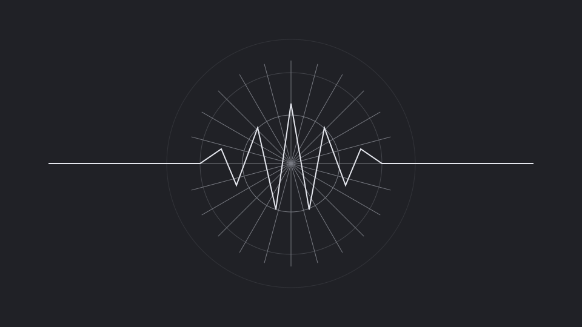

영상 불러오는 중던전앤파이터
스킬 사운드 리디자인
상세 설명
브레이커
개요
거대한 앵커를 활용하면서도 빠르고 저돌적인 전투를 펼치는 브레이커의 특성을 고려했습니다. 무기의 크기에서 비롯되는 묵직한 타격감을 유지하되, 해상 전투 기술을 사용하는 캐릭터의 설정을 반영하여 전체적인 사운드가 지나치게 무거워지지 않도록 했습니다. 앵커 특유의 금속성 질감과 무게감을 바탕으로 브레이커의 호쾌한 움직임을 표현하고자 했습니다.
01. 퀵 바이섹션
빠르게 내려 베는 짧은 공격 동작 안에서도 충분한 타격감을 전달하는 데 중점을 두었습니다. 이를 위해 금속성 사운드와 500Hz~1kHz 대역이 두드러지는 우시(Whoosh) 사운드를 중심으로 레이어링하여, 짧은 타격에서도 밀도와 무게감이 느껴지도록 구성했습니다.
무기의 질량감을 표현하면서도 공격의 속도감이 둔화되지 않도록, 짧고 간결한 동작에 어울리는 타격음을 구현하고자 했습니다.
02. 스위핑 스트라이크
거대한 앵커를 넓게 휘두른 뒤 돌풍이 발생하는 연출에서, 무기의 직접적인 타격과 뒤이어 나타나는 후속 효과의 관계를 중요하게 고려했습니다.
돌풍이 발생하기 전 앵커를 휘두르며 만들어지는 타격이 명확하게 전달되도록, 선행 타격음과 후속 우시 사운드의 밸런스를 조절했습니다. 후속 효과가 앞선 타격을 가리지 않으면서도 공격의 흐름이 자연스럽게 이어지도록 구성하는 데 중점을 두었습니다.
03. 교룡아
연속적으로 전진하며 앵커를 휘두르는 공격의 특성을 고려하여, 빠른 움직임과 폭발적인 타격감이 공존하도록 디자인했습니다.
이를 위해 저역·중역·고역을 담당하는 레이어를 구분하여 구성했으며, 특히 저역 소스가 지나치게 길게 유지되어 전체적인 움직임이 둔중하게 느껴지지 않도록 길이를 조절했습니다. 이를 통해 무기의 무게감을 유지하면서도 연속 공격의 속도감을 살리고자 했습니다.
또한 메탈 링아웃(Metal Ring-out)을 활용하여 타격 이후에도 앵커 특유의 금속성 울림이 느껴지도록 했습니다.
총검사
개요
총검사의 전직 중 요원과 스페셜리스트의 서로 다른 전투 스타일을 고려하여, 각 캐릭터의 특성이 사운드에서도 명확하게 구분되도록 디자인했습니다.
소태도와 총기를 사용하는 요원은 빠르고 정밀한 공격이 특징인 만큼, 날렵한 검격과 명료하면서도 무게감 있는 총성을 중심으로 속도감과 타격감을 표현하고자 했습니다. 반면 코어 에너지와 첨단 장비를 활용하는 스페셜리스트는 SF 계열의 인공적인 질감과 에너지의 축적 및 방출에 따른 변화를 강조하여, 물리적인 무기 공격과 차별화되는 사운드를 구현하는 데 중점을 두었습니다.
01. 요원 — 문페이즈
세 차례의 검격이 하나의 연속된 동작으로 이어지면서도 마지막 공격이 확실하게 강조되도록 디자인했습니다. 요원 특유의 날렵한 움직임을 표현하기 위해 SF 계열의 샷 사운드와 금속 마찰음(Metal Scrape), 거친 질감의 우시(Whoosh), 저음역대 우시를 레이어링하여 검격을 구성했습니다.
서로 다른 질감의 소리를 조합하여 검격의 속도감과 금속성 질감을 함께 표현하고, 연속되는 공격 중 마지막 검격에 무게를 두어 마무리감이 전달되도록 했습니다.
02. 요원 — 섬멸 (Annihilation)
섬멸의 기본형과 두 가지 스킬 개화(VP)를 포함한 총 세 가지 연출을 모두 리디자인하여, 각 버전의 연사 방식과 타격감이 구분되도록 작업했습니다.
세 버전 모두 공통적으로 저음역대가 강조된 묵직한 총기 소스를 사용했습니다. 해당 소스는 EQ를 통해 저음역대 위주로 가공한 뒤, 상대적으로 얇은 질감의 총성 소스와 레이어링했습니다. 이를 통해 총성의 명료함을 유지하면서도 저음역대의 밸런스를 조절하여 무게감을 부여했습니다.
첫 번째 버전은 기본적인 연속 사격의 흐름을 중심으로 구성했습니다. 두 번째 버전에서는 폭발 사운드에 프리퀀시 시프터(Frequency Shifter)를 적용하여 연사가 시작되는 순간을 강조하고, 빠르게 이어지는 총격에 특징적인 질감을 더했습니다.
세 번째 버전은 앞선 두 버전보다 느리지만 한 발 한 발의 무게감이 더욱 강하게 느껴지도록 디자인했습니다. 특히 마지막 한 발에는 폭발음과 금속성 사운드, 총성을 레이어링하여 연속 사격의 마무리를 강조했습니다.
03. 스페셜리스트 — CEAB-2
코어 에너지를 활용하는 스페셜리스트의 기술적이고 인공적인 이미지를 사운드에 반영하고자 했습니다. SF 계열의 사운드와 폭발음, 전기 방전음(Electric Zap)을 중심으로 레이어링하여 일반적인 물리 공격과 구분되는 에너지의 질감을 표현했습니다.
특히 폭발 이후에도 화면에 남아 있는 시각적 잔상을 사운드로 연결하는 데 중점을 두었습니다. 이를 위해 폭발 사운드의 테일을 별도로 분리하고 딜레이를 적용하여, 폭발이 발생한 이후에도 소리의 여운이 이어지도록 디자인했습니다.